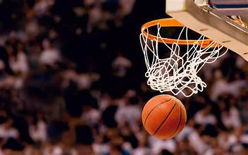

Basketball is a team sport in which two teams, most commonly of five players each, opposing one another on a rectangular court, compete with the primary objective of shooting a basketball (approximately 9.4 inches (24 cm) in diameter) through the defender's hoop (a basket 18 inches (46 cm) in diameter mounted 10 feet (3.048 m) high to a backboard at each end of the court), while preventing the opposing team from shooting through their own hoop.
Cricket is a bat-and-ball game that is played between two teams of eleven players on a field, at the centre of which is a 22-yard (20-metre) pitch with a wicket at each end, each comprising two bails balanced on three stumps. Two players from the batting team (the striker and nonstriker) stand in front of either wicket holding bats, with one player from the fielding team (the bowler) bowling the ball towards the striker's wicket from the opposite end of the pitch.

Football is a family of team sports that involve, to varying degrees, kicking a ball to score a goal. Unqualified, the word football generally means the form of football that is the most popular where the word is used. Sports commonly called football include association football (known as soccer in Australia, Canada, South Africa, the United States, and sometimes in Ireland and New Zealand); Australian rules football; Gaelic football; gridiron football (specifically American football, arena football, or Canadian football); International rules football; rugby league football; and rugby union football.
Table football, also known as foosball[a] or table soccer, is a tabletop game loosely based on association football. Its object is to move the ball into the opponent's goal by manipulating rods which have figures attached resembling football players of two opposing teams. Although its rules often vary by country and region when the game is played casually, competitive-level table football is played according to a unified code.
Carrom is a tabletop game of Indian origin in which players flick discs, attempting to knock them to the corners of the board. In South Asia, many clubs and cafés hold regular tournaments. Carrom is commonly played by families, including children, and at social functions. Different standards and rules exist in different areas.
Chess is an abstract strategy game that involves no hidden information and no elements of chance. It is played on a chessboard with 64 squares arranged in an 8×8 grid. The players, referred to as "White" and "Black", each control sixteen pieces: one king, one queen, two rooks, two bishops, two knights, and eight pawns. White moves first, followed by Black. The game is won by checkmating the opponent's king, i.e. threatening it with inescapable capture. There are several ways a game can end in a draw.